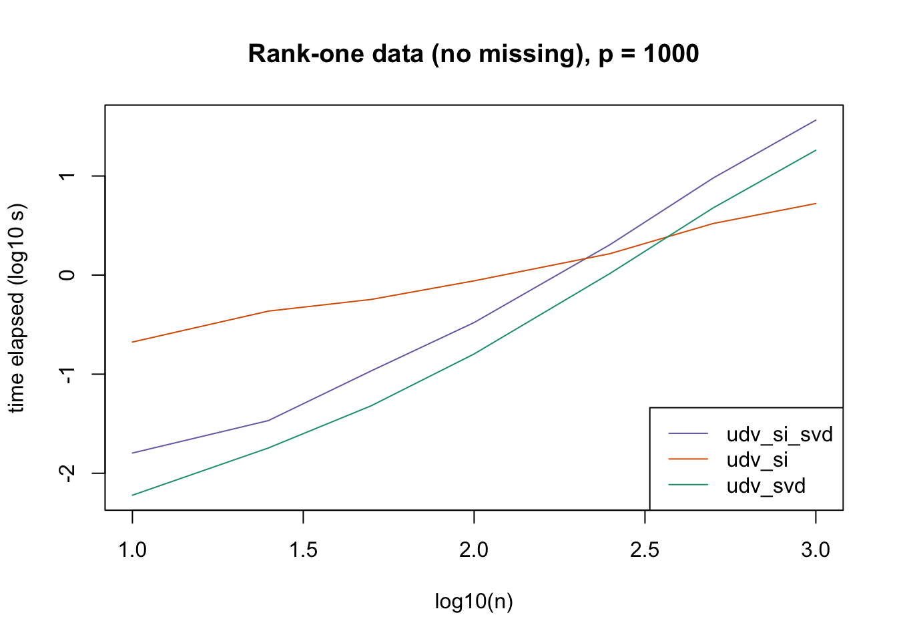

Last updated: 2018-08-29
workflowr checks: (Click a bullet for more information) ✔ R Markdown file: up-to-date
Great! Since the R Markdown file has been committed to the Git repository, you know the exact version of the code that produced these results.
✔ Environment: empty
Great job! The global environment was empty. Objects defined in the global environment can affect the analysis in your R Markdown file in unknown ways. For reproduciblity it’s best to always run the code in an empty environment.
✔ Seed:
set.seed(20180714)
The command set.seed(20180714) was run prior to running the code in the R Markdown file. Setting a seed ensures that any results that rely on randomness, e.g. subsampling or permutations, are reproducible.
✔ Session information: recorded
Great job! Recording the operating system, R version, and package versions is critical for reproducibility.
✔ Repository version: 237072b
wflow_publish or wflow_git_commit). workflowr only checks the R Markdown file, but you know if there are other scripts or data files that it depends on. Below is the status of the Git repository when the results were generated:
Ignored files:
Ignored: .DS_Store
Ignored: .Rhistory
Ignored: .Rproj.user/
Ignored: docs/.DS_Store
Ignored: docs/figure/.DS_Store
Untracked files:
Untracked: code/init_fn3.R
Untracked: data/greedy19.rds
Untracked: data/init_fn3/
| File | Version | Author | Date | Message |
|---|---|---|---|---|
| Rmd | 237072b | Jason Willwerscheid | 2018-08-29 | wflow_publish(“analysis/init_fn3.Rmd”) |
Here I return to the question of which initialization function is best, and in which cases. I run some simple experiments on simulated datasets of various dimensions and with or without missing data.
I simulate data from both a null model and a rank-one model with \(p \in \{1000, 10000\}\) and with \(n\) ranging from 10 to 1000. I either retain all of the data or I delete 20% of entries. I initialize using "udv_si", "udv_si_svd", and, when there is no missing data, "udv_svd".
I pre-run the code below and load the results from file.
all_res <- readRDS("./data/init_fn3/all_res.rds")
plot_results <- function(res, n, main, colors) {
colors = colors[c("udv_si_svd", "udv_si", "udv_svd")]
plot(log10(n), log10(res[["udv_si_svd"]]), type='l', col=colors[1],
xlab = "log10(n)", ylab = "time elapsed (log10 s)",
ylim = log10(c(min(unlist(res)), max(unlist(res)))),
main = main)
lines(log10(n), log10(res[["udv_si"]]), col=colors[2])
if (length(res) == 3) {
lines(log10(n), log10(res[["udv_svd"]]), col=colors[3])
}
legend.txt <- c("udv_si_svd", "udv_si", "udv_svd")
legend("bottomright", legend.txt[1:length(res)], lty=1,
col=colors[1:length(res)])
}
ns <- c(10, 25, 50, 100, 250, 500, 1000)
colors = RColorBrewer::brewer.pal(3, "Dark2")[1:3]
names(colors) = c("udv_svd", "udv_si", "udv_si_svd")
plot_results(all_res$null_noNA_p1000, ns,
"Null data (no missing), p = 1000", colors)plot_results(all_res$null_noNA_p10000, ns,
"Null data (no missing), p = 10000", colors)plot_results(all_res$r1_noNA_p1000, ns,
"Rank-one data (no missing), p = 1000", colors)
plot_results(all_res$r1_noNA_p10000, ns,
"Rank-one data (no missing), p = 10000", colors)plot_results(all_res$null_missing_p1000, ns,
"Null data (with missing), p = 1000", colors)plot_results(all_res$null_missing_p10000, ns,
"Null data (with missing), p = 10000", colors)plot_results(all_res$r1_missing_p1000, ns,
"Rank-one data (with missing), p = 1000", colors)plot_results(all_res$r1_missing_p10000, ns,
"Rank-one data (with missing), p = 10000", colors)The current default init_fn = "udv_si" is sensible. In cases with missing data, "udv_si" almost always beats "udv_si_svd"; the only exceptions are for small \(n\), but in such cases initialization is very fast anyway.
When there is no missing data, then "udv_svd" is the fastest method for small \(n\), but "udv_si" is again the fastest method when \(n\) becomes large. (Interestingly, the relative speeds do not seem to depend on the larger dimension \(p\).)
It would be possible to programmatically set init_fn based on \(n\) (or more precisely, based on the smaller of \(n\) and \(p\)), but I don’t think it’s worth the trouble, since "udv_si_svd" seems to consistently be the fastest (or nearly fastest) method when the speed of initialization actually becomes an issue.
devtools::load_all("/Users/willwerscheid/GitHub/flashr")
sim_mat <- function(n, p, type, missing) {
if (type == 1) {
out <- matrix(rnorm(n * p), nrow=n, ncol=p)
} else if (type == 2) {
out <- (outer(rep(1, n), rep(1, p))
+ matrix(rnorm(n * p), nrow=n, ncol=p))
}
if (missing) {
out[rbinom(n * p, 1, 0.2) == 1] <- NA
}
return(out)
}
do_experiment <- function(nreps, ns, p, type, missing, verbose=TRUE) {
res <- list()
if (missing) {
init_fns <- c("udv_si", "udv_si_svd")
} else {
init_fns <- c("udv_svd", "udv_si", "udv_si_svd")
}
for (init_fn in init_fns) {
res[[init_fn]] <- rep(NA, nrow=length(ns))
}
for (i in 1:length(ns)) {
if (verbose) {
message("n = ", ns[i])
}
data <- list()
for (rep in 1:nreps) {
data[[rep]] <- sim_mat(ns[i], p, type, missing)
}
for (init_fn in init_fns) {
t <- system.time({
for (rep in 1:nreps) {
fl <- flash_add_factors_from_data(data[[rep]],
K=5,
init_fn=init_fn,
backfit=FALSE,
verbose=FALSE)
}
})
res[[init_fn]][i] <- t["elapsed"]
}
}
return(res)
}
set.seed(666)
all_res <- list()
nreps <- 5
ns <- c(10, 25, 50, 100, 250, 500, 1000)
p <- 1000
all_res$null_noNA_p1000 <- do_experiment(nreps, ns, p, type=1,
missing=FALSE)
all_res$r1_noNA_p1000 <- do_experiment(nreps, ns, p, type=2,
missing=FALSE)
all_res$null_missing_p1000 <- do_experiment(nreps, ns, p, type=1,
missing=TRUE)
all_res$r1_missing_p1000 <- do_experiment(nreps, ns, p, type=2,
missing=TRUE)
nreps <- 1
ns <- c(10, 25, 50, 100, 250, 500, 1000)
p <- 10000
all_res$null_noNA_p10000 <- do_experiment(nreps, ns, p, type=1,
missing=FALSE)
all_res$r1_noNA_p10000 <- do_experiment(nreps, ns, p, type=2,
missing=FALSE)
all_res$null_missing_p10000 <- do_experiment(nreps, ns, p, type=1,
missing=TRUE)
all_res$r1_missing_p10000 <- do_experiment(nreps, ns, p, type=2,
missing=TRUE)
saveRDS(all_res, "./data/init_fn3/all_res.rds")sessionInfo()R version 3.4.3 (2017-11-30)
Platform: x86_64-apple-darwin15.6.0 (64-bit)
Running under: macOS High Sierra 10.13.6
Matrix products: default
BLAS: /Library/Frameworks/R.framework/Versions/3.4/Resources/lib/libRblas.0.dylib
LAPACK: /Library/Frameworks/R.framework/Versions/3.4/Resources/lib/libRlapack.dylib
locale:
[1] en_US.UTF-8/en_US.UTF-8/en_US.UTF-8/C/en_US.UTF-8/en_US.UTF-8
attached base packages:
[1] stats graphics grDevices utils datasets methods base
loaded via a namespace (and not attached):
[1] workflowr_1.0.1 Rcpp_0.12.17 digest_0.6.15
[4] rprojroot_1.3-2 R.methodsS3_1.7.1 backports_1.1.2
[7] git2r_0.21.0 magrittr_1.5 evaluate_0.10.1
[10] stringi_1.1.6 whisker_0.3-2 R.oo_1.21.0
[13] R.utils_2.6.0 rmarkdown_1.8 RColorBrewer_1.1-2
[16] tools_3.4.3 stringr_1.3.0 yaml_2.1.17
[19] compiler_3.4.3 htmltools_0.3.6 knitr_1.20 This reproducible R Markdown analysis was created with workflowr 1.0.1